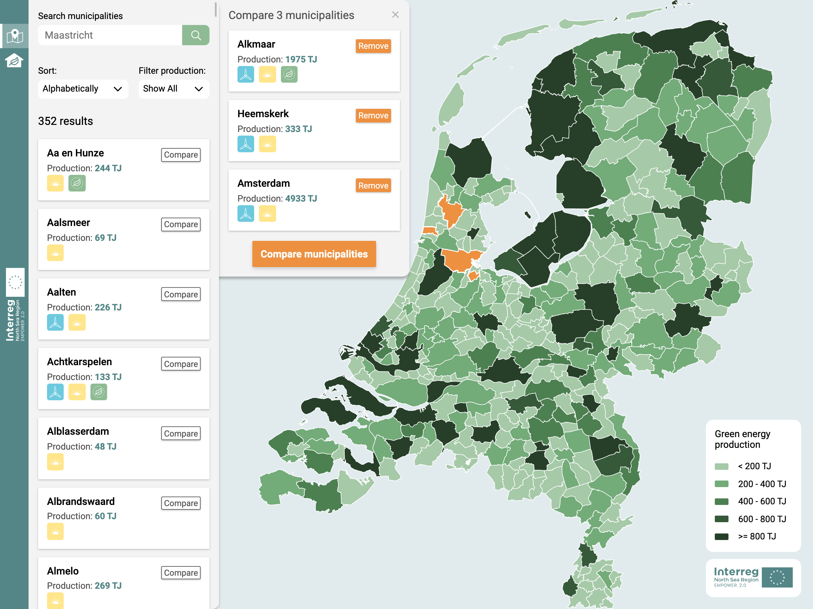
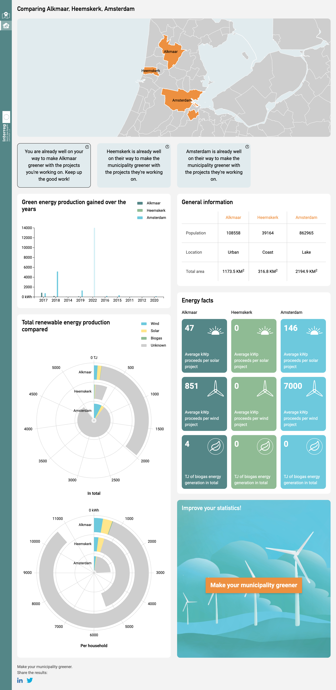

Project Information Design
Voor Project Information Design heb ik samen met Jonah Meijers en Fleur van Son een toolkit ontworpen voor de opdrachtgever EMPOWER 2.0, deze toolkit is gemaakt voor beleidsmakers om prosumers te worden op het gebied van hernieuwbare energie. Ons goal was om deze informatie op een handige en logische manier visueel over te brengen.
Onze toolkit bestaat uit twee pagina's, de landingspagina geeft een kaart weer van alle gemeenten van Nederland.
Je kan hier maximaal 3 gemeenten te selecteren die je op gebied van groene energie productie kan gaan vergelijken, je wordt dan doorgestuurd naar de vergelijkings pagina waar je informatie over de soorten en hoeveelheden energie kan vinden die de gemeente produceerd. Het doel van deze pagina is ook om te kijken wat de ene gemeente anders doet dan de anderen en zo te kijken hoe je de groene energie productie van een bepaalde gemeente kan verbeteren.
Voor het fysieke element moesten we iets maken dat bij het digitale product past. Wij hadden bedacht om een voordeur bordje en sleutelhanger te maken waarmee je kon aangeven dat jij door de toolkit van EMPOWER 2.0 meer groene energie bent gaan produceren.
Samen met Fleur heb ik de visuele kant van het project opgepakt, zoals alle kleuren, indelingen, grafieken, iconen etc. En Jonah heeft ons ontwerp in elkaar gecodeerd. Ik heb ook het fysieke product ontworpen en gemaakt in het Makers Lab van de HvA. En ik heb ons hele proces vastgelegd in onze Design Rationale.
Dit was een erg leuk project om als team samen aan te werken. Het begin was erg lastig omdat er zo veel data was om te verwerken maar uiteindelijk waren we op een goed idee gekomen en hebben we daar een mooie website bij opgeleverd waar we alle 3 erg trots op zijn. Het prototype staat online en kan bekeken worden op empower.jonahgold.dev